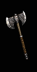
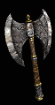

| 1 Handed Axe |
Min/Max 1h Damage
| Level Requirement
| Min Strength |
Min Dexterity |
Rangeadder
| Durability
| Sockets
| Speed by Class
| Quality Level |

Tomahawk
|
33 to 58 (45.5 Avg) |
40 |
125 |
67 |
0 |
28 |
2 |
[0]
Ama, Asn, B, D, N, P - Fast
S - Normal |
54 |

Small Crescent
|
38 to 60 (49 Avg) |
45 |
115 |
83 |
1 |
24 |
4 |
[10]
Asn, P - Fast
Ama, B, D,N, S, - Normal |
61 |

Ettin Axe
|
33 to 66 (49.5 Avg) |
52 |
145 |
45 |
1 |
24 |
5 |
[10]
Asn, P - Fast
Ama, B, D, N, S, - Normal |
70 |

War Spike
|
30 to 48 (39 Avg) |
59 |
133 |
54 |
1 |
26 |
6 |
[-10]
Asn, P - Very Fast
Ama, B, D, N, S, - Fast |
79 |

Berserker Axe
|
24 to 71 (47.5 Avg) |
64 |
138 |
59 |
2 |
26 |
6 |
[0]
Ama, Asn, B, D, N, P - Fast
S - Normal |
85 |
| 2 Handed Axe |
Min/Max 2h Damage
| Level Requirement
| Min Strength |
Min Dexterity |
Rangeadder
| Durability
| Sockets
| Speed By Class
| Quality Level |

Feral Axe
|
25 to 123 (74 Avg) |
42 |
196 |
- |
2 |
30 |
4 |
[-15]
D, S - Very Fast
N, P - Fast
Ama, Asn, B, - Normal |
57 |

Silver-Edged Axe
|
62 to 110 (86 Avg) |
48 |
166 |
65 |
2 |
35 |
5 |
[0]
D, P, S - Fast
Ama, Asn, B, N - Normal |
65 |

Decapitator
|
49 to 137 (93 Avg) |
54 |
189 |
33 |
2 |
40 |
5 |
[10]
D - Fast
N, S - Normal
Ama, Asn, B, P - Slow |
73 |

Champion Axe
|
59 to 94 (76.5 Avg) |
61 |
167 |
59 |
2 |
50 |
6 |
[-10]
D - Very Fast
N, P, S - Fast
B, Ama, Asn - Normal |
82 |

Glorious Axe
|
60 to 124 (92 Avg) |
66 |
164 |
55 |
3 |
50 |
6 |
[10]
D - Fast
N, S - Normal
Ama, Asn, B, P - Slow |
85 |